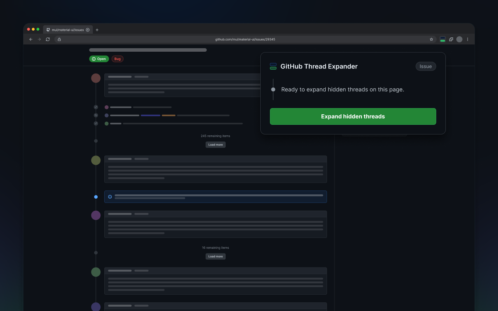

01
Open it where you are already working.
Thread Expander works on pull requests, issues, and discussions. It finds hidden threads automatically, with nothing to configure.
Pull requests
Issues
Discussions
